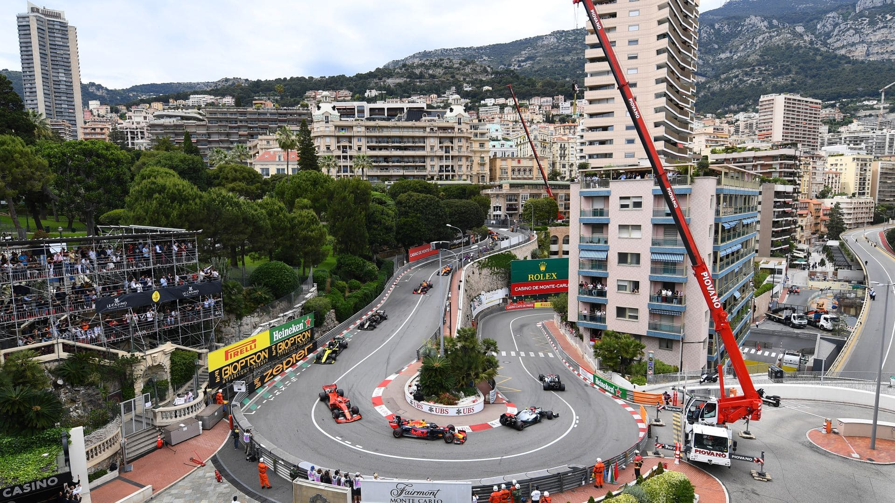

GRAND PRIX
🇲🇨 MONACO GP FAN EXPERIENCE
📅 23 mai 2027
📍 Monte-Carlo, Monaco
Vis une journée exceptionnelle dans l'ambiance du Grand Prix de Monaco ! Au programme : rencontre entre fans, animations et découverte de l'univers de la Formule 1.
👥 128 participants